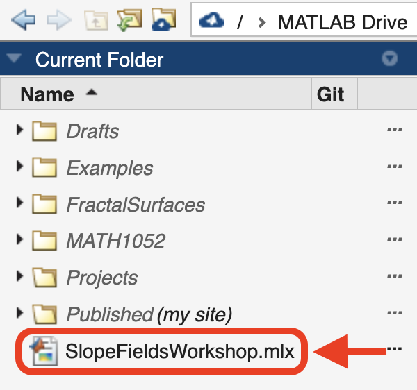

MATLAB Live Scripts
Multivariable Calculus & Ordinary Differential Equations
* * *
Interactive activities for learning mathematics and MATLAB
How to open mlx files?
-
Download mlx
First download the mlx file that you need to your computer.
-
Sign up or Create an account in MATLAB Mathworks
You can do this here: matlab.mathworks.com/
-
Upload your file
Once you access MATLAB online, drag and drop the mlx file to your MATLAB Drive located on the left-side column:

-
Open your file
Finally, on the left-side column locate your mlx file and double click to open it.
That's it! 😃
Team
- Poh Hillock
- Samuel Kault
- Marcus Flook
- Christina Tang-Fujiwara
- Andrew Mengene
- Liam Timms
- Emma Comino
- Montana Wickens
- JC Ponce Campuzano